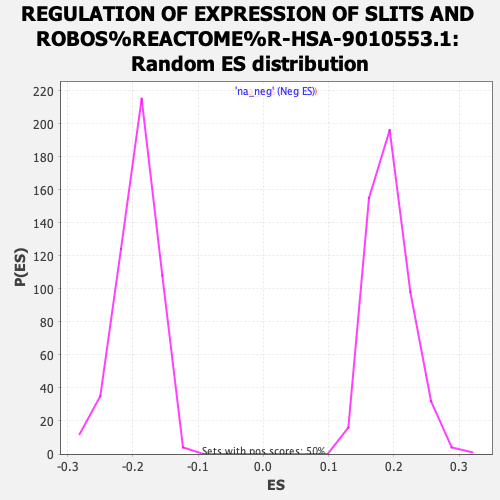

| | | Dataset | tel_exp_collapsed |
| Phenotype | NoPhenotypeAvailable |
| Upregulated in class | na_pos |
| GeneSet | REGULATION OF EXPRESSION OF SLITS AND ROBOS%REACTOME%R-HSA-9010553.1 |
| Enrichment Score (ES) | 0.70164824 |
| Normalized Enrichment Score (NES) | 3.642206 |
| Nominal p-value | 0.0 |
| FDR q-value | 0.0 |
| FWER p-Value | 0.0 |
Table: GSEA Results Summary
 Fig 1: Enrichment plot: REGULATION OF EXPRESSION OF SLITS AND ROBOS%REACTOME%R-HSA-9010553.1
Fig 1: Enrichment plot: REGULATION OF EXPRESSION OF SLITS AND ROBOS%REACTOME%R-HSA-9010553.1
Profile of the Running ES Score & Positions of GeneSet Members on the Rank Ordered List
| PROBE | GENE SYMBOL | GENE_TITLE | RANK IN GENE LIST | RANK METRIC SCORE | RUNNING ES | CORE ENRICHMENT | | 1 | RPL41 | | | 135 | 15.363 | 0.0028 | Yes |
| 2 | RPL3L | | | 138 | 15.301 | 0.0146 | Yes |
| 3 | RPS27A | | | 257 | 13.814 | 0.0173 | Yes |
| 4 | RPLP1 | | | 262 | 13.755 | 0.0278 | Yes |
| 5 | RPS27 | | | 279 | 13.630 | 0.0373 | Yes |
| 6 | RPL17 | | | 282 | 13.597 | 0.0478 | Yes |
| 7 | RPL30 | | | 344 | 13.203 | 0.0539 | Yes |
| 8 | RPL18A | | | 360 | 13.065 | 0.0631 | Yes |
| 9 | RPL19 | | | 381 | 12.937 | 0.0718 | Yes |
| 10 | RPL9 | | | 413 | 12.789 | 0.0796 | Yes |
| 11 | RPS4X | | | 446 | 12.619 | 0.0873 | Yes |
| 12 | UBA52 | | | 463 | 12.539 | 0.0960 | Yes |
| 13 | RPL4 | | | 464 | 12.530 | 0.1057 | Yes |
| 14 | RPL11 | | | 468 | 12.492 | 0.1152 | Yes |
| 15 | PSMC4 | | | 473 | 12.464 | 0.1247 | Yes |
| 16 | FAU | | | 477 | 12.448 | 0.1342 | Yes |
| 17 | RPL24 | | | 478 | 12.446 | 0.1438 | Yes |
| 18 | RPS12 | | | 498 | 12.370 | 0.1522 | Yes |
| 19 | RPS2 | | | 508 | 12.280 | 0.1611 | Yes |
| 20 | PABPC1 | | | 526 | 12.177 | 0.1695 | Yes |
| 21 | RPS28 | | | 535 | 12.157 | 0.1784 | Yes |
| 22 | PSMD2 | | | 537 | 12.129 | 0.1878 | Yes |
| 23 | RPL28 | | | 539 | 12.124 | 0.1971 | Yes |
| 24 | RPL7 | | | 555 | 12.067 | 0.2055 | Yes |
| 25 | RPS29 | | | 556 | 12.062 | 0.2149 | Yes |
| 26 | RPL18 | | | 589 | 11.927 | 0.2220 | Yes |
| 27 | RPL14 | | | 601 | 11.853 | 0.2305 | Yes |
| 28 | PSMC3 | | | 607 | 11.824 | 0.2394 | Yes |
| 29 | RPS11 | | | 615 | 11.803 | 0.2481 | Yes |
| 30 | RPS17 | | | 658 | 11.656 | 0.2543 | Yes |
| 31 | RPLP2 | | | 664 | 11.604 | 0.2630 | Yes |
| 32 | RPL38 | | | 697 | 11.483 | 0.2698 | Yes |
| 33 | RPL8 | | | 725 | 11.394 | 0.2768 | Yes |
| 34 | PSMB7 | | | 727 | 11.388 | 0.2856 | Yes |
| 35 | RPS19 | | | 752 | 11.246 | 0.2927 | Yes |
| 36 | RPS13 | | | 772 | 11.196 | 0.3002 | Yes |
| 37 | RPS6 | | | 778 | 11.182 | 0.3085 | Yes |
| 38 | RPLP0 | | | 785 | 11.156 | 0.3168 | Yes |
| 39 | RPL37A | | | 790 | 11.122 | 0.3252 | Yes |
| 40 | RPS24 | | | 799 | 11.075 | 0.3333 | Yes |
| 41 | RPL23 | | | 806 | 11.050 | 0.3415 | Yes |
| 42 | RPL3 | | | 816 | 11.029 | 0.3494 | Yes |
| 43 | RPL5 | | | 837 | 10.953 | 0.3566 | Yes |
| 44 | RPL36 | | | 839 | 10.952 | 0.3651 | Yes |
| 45 | RPL34 | | | 855 | 10.914 | 0.3726 | Yes |
| 46 | RPL10A | | | 862 | 10.876 | 0.3806 | Yes |
| 47 | RPL12 | | | 885 | 10.818 | 0.3875 | Yes |
| 48 | RPL10 | | | 907 | 10.770 | 0.3945 | Yes |
| 49 | RPL13 | | | 914 | 10.753 | 0.4025 | Yes |
| 50 | RPS23 | | | 917 | 10.751 | 0.4107 | Yes |
| 51 | RPL21 | | | 919 | 10.740 | 0.4190 | Yes |
| 52 | RPS8 | | | 956 | 10.634 | 0.4248 | Yes |
| 53 | PSMC5 | | | 965 | 10.613 | 0.4326 | Yes |
| 54 | RPL39 | | | 972 | 10.589 | 0.4404 | Yes |
| 55 | RPS20 | | | 980 | 10.578 | 0.4482 | Yes |
| 56 | RPL32 | | | 986 | 10.572 | 0.4561 | Yes |
| 57 | RPL22 | | | 1008 | 10.526 | 0.4628 | Yes |
| 58 | PSMD14 | | | 1062 | 10.401 | 0.4673 | Yes |
| 59 | RPL15 | | | 1092 | 10.346 | 0.4734 | Yes |
| 60 | RPS26 | | | 1095 | 10.336 | 0.4813 | Yes |
| 61 | RPS15A | | | 1105 | 10.318 | 0.4887 | Yes |
| 62 | RPL37 | | | 1136 | 10.246 | 0.4947 | Yes |
| 63 | RPS14 | | | 1176 | 10.144 | 0.4999 | Yes |
| 64 | RPL27A | | | 1203 | 10.067 | 0.5060 | Yes |
| 65 | PSMD11 | | | 1222 | 10.004 | 0.5126 | Yes |
| 66 | PSMB4 | | | 1254 | 9.933 | 0.5182 | Yes |
| 67 | PSMA6 | | | 1280 | 9.891 | 0.5242 | Yes |
| 68 | RPL23A | | | 1294 | 9.851 | 0.5310 | Yes |
| 69 | RPL35A | | | 1297 | 9.839 | 0.5385 | Yes |
| 70 | MAGOHB | | | 1346 | 9.728 | 0.5429 | Yes |
| 71 | PSMA4 | | | 1371 | 9.660 | 0.5488 | Yes |
| 72 | PSME2 | | | 1441 | 9.495 | 0.5515 | Yes |
| 73 | RPL26 | | | 1463 | 9.446 | 0.5574 | Yes |
| 74 | RPS7 | | | 1473 | 9.429 | 0.5641 | Yes |
| 75 | RPS27L | | | 1478 | 9.422 | 0.5712 | Yes |
| 76 | PSMA3 | | | 1509 | 9.328 | 0.5764 | Yes |
| 77 | PSMB2 | | | 1519 | 9.316 | 0.5831 | Yes |
| 78 | PSMB6 | | | 1523 | 9.314 | 0.5901 | Yes |
| 79 | PSMD4 | | | 1545 | 9.258 | 0.5959 | Yes |
| 80 | RPS21 | | | 1564 | 9.212 | 0.6018 | Yes |
| 81 | PSMB1 | | | 1565 | 9.209 | 0.6090 | Yes |
| 82 | PSMD8 | | | 1567 | 9.204 | 0.6161 | Yes |
| 83 | PSMC1 | | | 1579 | 9.189 | 0.6225 | Yes |
| 84 | PSMA7 | | | 1585 | 9.174 | 0.6293 | Yes |
| 85 | RPL26L1 | | | 1587 | 9.164 | 0.6364 | Yes |
| 86 | RPS10 | | | 1598 | 9.136 | 0.6428 | Yes |
| 87 | PSME3 | | | 1610 | 9.111 | 0.6492 | Yes |
| 88 | RPL27 | | | 1612 | 9.106 | 0.6562 | Yes |
| 89 | SLIT2 | | | 1689 | 8.987 | 0.6580 | Yes |
| 90 | PSMD1 | | | 1756 | 8.854 | 0.6605 | Yes |
| 91 | RPL7A | | | 1809 | 8.761 | 0.6638 | Yes |
| 92 | RPL29 | | | 1825 | 8.729 | 0.6695 | Yes |
| 93 | RPS15 | | | 1829 | 8.721 | 0.6761 | Yes |
| 94 | PSMD6 | | | 1919 | 8.598 | 0.6768 | Yes |
| 95 | PSME1 | | | 1945 | 8.550 | 0.6817 | Yes |
| 96 | RPS3 | | | 1986 | 8.477 | 0.6856 | Yes |
| 97 | RPL36A | | | 2001 | 8.456 | 0.6913 | Yes |
| 98 | PSMA5 | | | 2037 | 8.399 | 0.6954 | Yes |
| 99 | PSMC2 | | | 2045 | 8.377 | 0.7015 | Yes |
| 100 | EIF4G1 | | | 2335 | 7.909 | 0.6880 | Yes |
| 101 | RPS5 | | | 2414 | 7.789 | 0.6888 | Yes |
| 102 | RNPS1 | | | 2459 | 7.744 | 0.6919 | Yes |
| 103 | RPS25 | | | 2512 | 7.671 | 0.6943 | Yes |
| 104 | RPS3A | | | 2580 | 7.565 | 0.6957 | Yes |
| 105 | PSMB5 | | | 2635 | 7.485 | 0.6978 | Yes |
| 106 | PSMA1 | | | 2665 | 7.438 | 0.7016 | Yes |
| 107 | RPL31 | | | 3025 | 6.924 | 0.6827 | No |
| 108 | RPS16 | | | 3166 | 6.704 | 0.6784 | No |
| 109 | RPL35 | | | 3266 | 6.533 | 0.6768 | No |
| 110 | GSPT1 | | | 3462 | 6.258 | 0.6685 | No |
| 111 | ETF1 | | | 3731 | 5.853 | 0.6548 | No |
| 112 | PSMC6 | | | 3900 | 5.579 | 0.6478 | No |
| 113 | PSMD13 | | | 3990 | 5.457 | 0.6460 | No |
| 114 | PSME4 | | | 4298 | 4.894 | 0.6290 | No |
| 115 | RBM8A | | | 4468 | 4.641 | 0.6212 | No |
| 116 | MAGOH | | | 4735 | 4.165 | 0.6064 | No |
| 117 | PSMD12 | | | 5124 | 3.437 | 0.5828 | No |
| 118 | EIF4A3 | | | 5272 | 3.143 | 0.5752 | No |
| 119 | UBB | | | 5357 | 2.971 | 0.5719 | No |
| 120 | UBC | | | 5750 | 2.270 | 0.5470 | No |
| 121 | RPL22L1 | | | 5848 | 2.090 | 0.5421 | No |
| 122 | UPF3A | | | 6006 | 1.815 | 0.5329 | No |
| 123 | RPL39L | | | 6064 | 1.693 | 0.5303 | No |
| 124 | PSMB10 | | | 6338 | 1.264 | 0.5128 | No |
| 125 | RPSA | | | 6548 | 0.942 | 0.4994 | No |
| 126 | PSMF1 | | | 6620 | 0.826 | 0.4952 | No |
| 127 | NCBP1 | | | 6634 | 0.813 | 0.4949 | No |
| 128 | PSMD3 | | | 6635 | 0.813 | 0.4956 | No |
| 129 | PSMB3 | | | 6862 | 0.530 | 0.4807 | No |
| 130 | CUL2 | | | 6944 | 0.428 | 0.4755 | No |
| 131 | LHX9 | | | 6968 | 0.399 | 0.4743 | No |
| 132 | PSMD10 | | | 7076 | 0.287 | 0.4672 | No |
| 133 | LHX4 | | | 7145 | 0.220 | 0.4628 | No |
| 134 | PSMD7 | | | 7875 | -0.392 | 0.4137 | No |
| 135 | PSMA2 | | | 7911 | -0.429 | 0.4116 | No |
| 136 | RPL36AL | | | 7972 | -0.503 | 0.4080 | No |
| 137 | LHX2 | | | 8231 | -0.882 | 0.3912 | No |
| 138 | ROBO1 | | | 8344 | -1.035 | 0.3844 | No |
| 139 | ZSWIM8 | | | 8346 | -1.040 | 0.3851 | No |
| 140 | RBX1 | | | 8383 | -1.096 | 0.3835 | No |
| 141 | PSMD9 | | | 8544 | -1.350 | 0.3737 | No |
| 142 | PSMD5 | | | 9704 | -3.415 | 0.2978 | No |
| 143 | COL4A5 | | | 10504 | -4.826 | 0.2474 | No |
| 144 | NCBP2 | | | 10677 | -5.112 | 0.2397 | No |
| 145 | USP33 | | | 11529 | -6.583 | 0.1872 | No |
| 146 | UPF3B | | | 11946 | -7.311 | 0.1647 | No |
| 147 | CASC3 | | | 12227 | -7.766 | 0.1517 | No |
| 148 | LDB1 | | | 12251 | -7.808 | 0.1562 | No |
| 149 | RPL13A | | | 12567 | -8.301 | 0.1413 | No |
| 150 | DAG1 | | | 13126 | -9.268 | 0.1107 | No |
| 151 | UPF2 | | | 14480 | -12.244 | 0.0285 | No |
Table: GSEA details [plain text format]

Fig 2: REGULATION OF EXPRESSION OF SLITS AND ROBOS%REACTOME%R-HSA-9010553.1: Random ES distribution
Gene set null distribution of ES for REGULATION OF EXPRESSION OF SLITS AND ROBOS%REACTOME%R-HSA-9010553.1